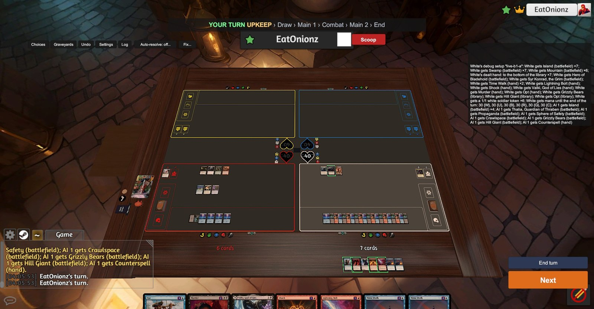
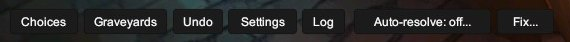
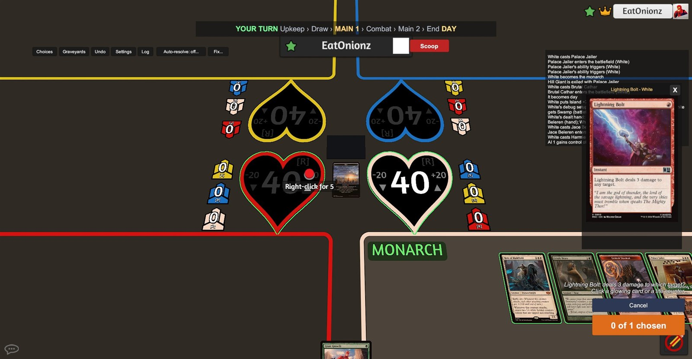

MTG Commander · Tabletop Simulator · rules-engine tablePlayers' guide
Playing on the rules-engine table
A step-by-step picture guide for everyone at the table
This is the group's 4-player Commander table in Tabletop Simulator (TTS), with the Forge rules engine running the
game underneath. You play the way you always have: drag cards, tap them, click the table's buttons. The engine checks every
move, puts things on the stack, asks the questions (targets, blockers, triggers) and moves the cards for you. A move that
isn't legal snaps back, and the chat says why.
Sections are numbered as in the contents; each starts on its own page. Every picture in this guide is a real screenshot of the table. Numbered orange circles point at the parts each page talks about.
A striped box marked Screenshot needed is a picture still to be taken; the text next to it is accurate.
Contents
- The screen at a glance p. 2
- Joining a seat and starting a game p. 3
- Your hand and the green glow p. 4
- Playing a card and paying costs p. 5
- The stack and the corner buttons p. 6
- The Choices window and the card row p. 7
- Targets and exact picks p. 8
- Combat: attacking p. 9
- Combat: blocking p. 10
- Triggers, stops and Auto-resolve p. 11
- Marks, life and counters p. 12
- Planechase and dungeons p. 13
- Fix... and rewinding (Undo) p. 14
- Chat commands cheat sheet p. 15
- Sounds and effects p. 16
- Troubleshooting p. 17
The three glows
| Green | You can act on it now: a card you can play, a permanent with an ability you can use, a target, an attacker, a blocker, a card to pick. |
| Gold | You picked it (a chosen card or target). |
| Red / blue | In combat: red = attacking, blue = blocking. |
Who runs what: only the host starts the engine (Start MTG or the MTG Companion app). Everyone else
just needs TTS and a seat. This guide is for the players at the table; the host's setup is in HOW-TO-PLAY.md and the companion guide.
1 · The screen at a glanceWhite's view, own turn, upkeep
The screen at a glance
What you see when you sit down. Your own seat is always at the bottom right of your camera; the rest of the
screen is yours only (each player gets their own copy of the buttons).

1
2
3
4
5
6
7
8
9
10
11
12
13
14
- 1The dock: Choices, Graveyards, Undo, Settings, Log, Auto-resolve, Fix... (section 6).
- 2Phase bar: whose turn and the step; DAY / NIGHT and the plane show here too.
- 3Your name and Scoop (concede).
- 4Game log: every play, trigger, life change. Log in the dock hides it.
- 5Life counters (hearts) with commander damage beside them.
- 6Your battlefield: creatures in front, other permanents behind.
- 7The mana box: your lands' row near the mat's bottom edge.
- 8Command zone: your commander.
- 9Exile, library and graveyard spots.
- 10Your hand on the table: drag cards from here.
- 11TTS's own hand strip (look, but don't drag from it).
- 12Corner buttons and the instruction line above them.
- 13Chat: the table's messages start with
[MTG].
- 14Other players' mats (here a Forge AI on Red).
2 · Joining a seat and starting a gameBefore turn 1
Joining a seat and starting a game
- Join the host's server (Steam invite or the server browser) and sit at a colour: White, Red, Yellow or Blue.
- Bring your deck with the table's Card Importer as usual: the deck on your library spot, your commander on your command zone.
- Turn the engine on: anyone seated presses Engine: on on the middle tile (or types
mtg engine on).
- Press READY? on your playmat. It checks every card against the engine: READY
(green) means good to go; FIX DECK (red) means the chat lists what's wrong (an unknown card, no commander...).
- Free mulligans (optional): the button on the left rim of the table (where the cannon sits outside engine mode) goes
None → 1 → 2. One count for the whole table, the rules' free first mulligan included; everyone is told who changed it.
- Start: when everyone is green, anyone seated presses Start on the middle tile. A dice roll picks who goes
first; turns then go clockwise: White → Red → Yellow → Blue. Empty seats can be Forge AI players (
mtg start ai 1, up to 3).
Screenshot neededimg/needed/ready-start.jpgThe middle tile (Engine: on, Start), a READY? button on a
playmat, and the Free mulligans button on the left rim, before a game.
Keep or mulligan
- 1The question: Keep this hand?
- 2Mulligan (free): a new 7, nothing to the bottom. Without a free one left it reads Mulligan.
- 3Keep.
- 4Your new hand. After a normal mulligan the table asks which cards go to the bottom.
3 · Your hand and the green glowWhat can I do right now?
Your hand and the green glow
The table lights up what you can do right now. Only you see your own glow.
- 1Green frame = you can play this card now (you have the mana and the timing is right).
- 2No frame = not now (no mana, wrong timing, or a sorcery while something is on the stack).
- 3TTS's hand strip at the bottom of the screen: good for reading cards, but it rises when the pointer touches it,
so drag from the cards on the table instead.
- 4The corner buttons (section 5). With nothing to answer, Next passes and End turn passes to the end of your turn.
Permanents glow too
- 1Your commander glows in the command zone when you can cast it.
- 2A permanent glows when it has an ability you can use now. Mana-only abilities don't glow at priority.
- 3No glow: nothing to do with these right now.
Cards you may play from elsewhere (flashback, foretell, adventures, "play from exile") lie in a glowing row on the
near strip of your own mat, below your lands. Drag one onto the battlefield to play it. Turn the glow off or on with mtg glow.
4 · Playing a card and paying costsDrag, then pay
Playing a card and paying costs
- Drag the card from your hand onto your battlefield. Your commander: drag it from the command zone (the tax is added for you).
A land lands in the mana box by itself; other cards stay where you drop them.
- Answer any question it asks: targets, modes, X, "how do you play it?" (sections 6 and 7).
- Pay. Usually the cost is paid for you. If the table asks, press Auto-pay, or tap a glowing land or
mana source yourself with Q / E. Mana already in your pool pays by itself.
- The spell goes on the stack (section 5). A move the rules don't allow snaps back, and the chat says why.
- 1What to pay: Pay {G} for Giant Growth. Tap lands (Q/E), or Auto-pay.
- 2Cancel takes the spell back: the card returns to your hand and lands you tapped for it untap.
- 3The main button: Auto-pay or, with mana floating, Pay from mana pool.
Abilities on your cards
Point at one of your cards: its abilities appear as big buttons in a panel at the bottom right, above the corner buttons.
Each line shows the cost in gold, then the effect; hover for the whole text, click to use it. A line you can't use now is greyed,
with the reason (Tapped, Summoning sickness, Not your priority, Only as a sorcery...). Six lines a page,
More... for the rest, X to close. The same abilities are on the card itself and in its right-click menu.
Equip: drag the equipment onto your creature (or use its Equip line).
Screenshot neededimg/needed/ability-panel.jpgThe ability panel for a creature with several
abilities, one greyed with its reason.
Cost badges
Screenshot neededimg/needed/cost-badge.jpgA hand card with a changed cost (Thalia out).
When a card's cost is changed (commander tax, Thalia, a cost reducer), a round counter covers its generic mana number with the
new total: a red rim when it costs more, green when less. Hover text: Costs {3}{R}{R} now (printed {2}{R}{R}).
5 · The stack and the corner buttonsPass, Resolve, Resolve all
The stack and the corner buttons
The corner buttons at the bottom right are your main answer. Their words change with the question; the line above
them says what the table wants.
Screenshot neededimg/needed/corner-resolve.jpgThe corner with a stack: orange Resolve, navy
Resolve all (N) and the purple "Resolve N× <name>" above them.
| Button | What it does |
|---|
| Next | Nothing on the stack: pass priority (the game moves on). |
| End turn | Pass until your turn ends (you're still asked if something needs you). |
| Resolve | Something on the stack: pass, so the top item resolves. |
| Resolve all (N) | Keep passing until the N items (and your own new triggers) are done. It stops when another player adds something, the step changes, or a question needs you. |
| Resolve 4× Swiftspear | Purple, only when the top of the stack is a run of 2+ of the same ability of yours (eight prowess triggers): resolves just that run in one press. |
| Done / Cancel | Finish a pick / take back a spell or ability while paying. |
| 1 of 2 chosen | A count, not a button: the last pick answers by itself. |
- 1The stack pop-up: the item on top and whose it is.
- 2X closes it (it comes back for the next item).
- 3The card that made it.
- 4What will happen (a trigger's own text).
Hotkey: bind MTG: pass priority / main button to P (Options → Controls → scripting hotkeys).
Safety: when a new question changes the button's words (Resolve becomes Next), a click in the next half second is ignored, so a click meant for the old button can't pass by mistake.
6 · The Choices window and the card rowQuestions that need more than a click
The Choices window and the card row

1
2
3
4
5
6
7
- 1Choices: the full question window. Opens by itself when a question needs it.
- 2Graveyards: every graveyard and exile pile, to look through.
- 3Undo: restore points (section 13). Shown only when there are some.
- 4Settings: My effects, My sounds, Table animations (host), Draw / mill / untap by itself.
- 5Log: show or hide the game log.
- 6Auto-resolve (section 10).
- 7Fix... (section 13).
(Taken before the dock got its tabs; the window inside is the same.)
- 1Status: turn, step, who has priority, the stack.
- 2The question and its card's text.
- 3Search box: type to narrow a long list.
- 4The answers. Long lists end in More....
- 5Done (0 of 1): counts your picks.
- 6The stops (section 10).
The window can be dragged anywhere. Picking from your library: choose in the list, or right-click your library → Search and drag the card out.
Quick questions: the card row
- 1A short question opens in the middle of the screen...
- 2...with one button per answer, and Back.
7 · Targets and exact picksClick what glows
Targets and exact picks

1
1
2
3
4
5
6
7
8
- 1A player: click their glowing life counter.
- 2A creature or planeswalker: click the glowing card.
- 3The question: Lightning Bolt: deals 3 damage to which target?
- 4Cancel takes the spell back.
- 50 of 1 chosen: the last pick answers by itself.
- 6The spell, in the stack pop-up.
- 7A mark: this player is the MONARCH (section 11).
- 8DAY / NIGHT shows in the phase bar once a card makes it day.
Picking cards
- 1The question, with what the card does.
- 2Click the cards you want; they turn gold.
- 3Done (0) counts your picks.
- 4The card asking, in the stack pop-up.
Discarding most of your hand (cleanup with a huge hand): the table asks which cards to keep instead.
Scry: the top card is shown beside Done; click it to put it on the bottom, then Done.
8 · Combat: attackingGreen means attack
Combat: attacking
- 1Creatures that can attack glow green.
- 2Choose attackers. Click a creature, then who it attacks.
- 3Taxes and limits are spelled out: Attack tax: AI 1 {4} each.
- 4All attack: everything that can attacks.
- 5No attacks. Once you pick some it becomes Attack (2).
- Pick an attacker: press Q / E on a glowing creature (or click its line in the Choices window).
- Pick what it attacks: click a player's life counter, a glowing planeswalker or a battle. The chat confirms:
Hero of Bladehold 3/4 attacks AI 1.
- Press Attack (n) (or All attack). If a tax is due, the table asks you to pay it; its
Cancel is Don't attack with X.
Attack whom?
- 1With more than one player or planeswalker to attack, the table asks.
- 2A player, with any tax shown.
- 3A planeswalker, named with its controller.
- 4Back. All attack can also go One by one.
Big token boards: five or more identical tokens stack as one card with an ×N label; attacking with the
stack sends them all. To use only some, press Split in the grey box beside it. Attack questions with more than 8 lines get
tabs by creature name in the Choices window, e.g. Spirit Token (20).
9 · Combat: blockingRed means you're attacked
Combat: blocking
When someone attacks you, COMBAT turns red in your phase bar and the corner shows a red Done.
- 1The attacker, framed red.
- 2The attack line points at whom it attacks (here: you).
- 3Your creatures that can block glow green.
- 4A blocker, framed blue.
- 5Every click is confirmed in the chat.
- 6Choose blockers. Click your creature, then the attacker it blocks.
- 7Done when finished (with no blocks: no blocks).
- Click your glowing creature. Chat: Now click the attacker for Soldier Token 1/1 #3 to block (or click it again: no block).
- Click the attacker it blocks. Chat: Soldier Token 1/1 #3 blocks Ghalta, Primal Hunger 12/12. Click the blocker again to change it; Done when finished.
- Repeat for each blocker, then press Done.
Changing your mind: click the blocker again to take its block back, or right-click it → Don't block with this.
Identical creatures are numbered (#1, #2...) in the chat and the Choices window so you can tell them apart.
After blocks, the attacking player gets priority when they hold something to cast (a pump spell), as on Arena.
Combat damage, deaths and life changes then appear in the log.
10 · Triggers, stops and Auto-resolveFewer clicks
Triggers, stops and Auto-resolve
(Taken with the older dock; the list is the same.)
- 1Auto-resolve... opens the list (green while on).
- 2Off: you're asked as usual.
- 3Other players' turns: pass by yourself on their turns; your own turn asks as usual.
- 4Until upkeep / draw / main phase / combat / blockers / damage / main 2 / end step: pass until that step comes, on anyone's turn, then it switches off.
- 5Until my turn: the same, up to your next turn.
Play your lands first: an "Until" passes your own priority too. An opponent's spell or ability on the stack
ends an "Until" so you can answer, and questions other than priority (targets, blocks, discards) are always asked.
Typed: mtg skip combat ... mtg skip mine, mtg skip off.
Stops and Hold
At the bottom of the Choices window: where the game waits for you on other players' turns (gold = on).
1 Stop: start of turn and 3 Stop: end of turn are on by default; 2 Stop: combat is off. They only stop
when you can do something. 4 Hold (or mtg hold) keeps priority once after something goes
on the stack, to respond to your own trigger. Over your own spell you are asked anyway when you hold a spell to answer it with.
Step banners
1 When the table stops to ask you something, the step shows in the middle of the screen once (UPKEEP, DRAW, MAIN PHASE 1,
COMBAT, MAIN PHASE 2, END STEP, CLEANUP). Turn banners say YOUR TURN or the player's name. Never while Auto-resolve passes for you.
11 · Marks, life and countersWho has what
Marks, life and counters
- 1Your life counter (the heart by your mat). The engine sets it; you don't need to turn it.
- 2The other players' hearts. During a target question a player's heart glows and can be clicked.
- 3Commander damage: one small shield per opponent's colour.
- 4Marks: a box in the corner of the holder's mat, under their heart.
Mark boxes
One box a mark, stacked down the corner: 1 INITIATIVE, 2 DUNGEONS 1.
Screenshot neededimg/needed/marks-stack.jpgSeveral marks stacked on one mat (MONARCH, RING TEMPTED,
SPEED, EXTRA TURN), drawn as separate boxes.
| Mark | Means | Mark | Means |
|---|
| MONARCH | you're the monarch | POISON 3 | poison counters |
| INITIATIVE | you have the initiative | ENERGY 4 | energy |
| CITY'S BLESSING | you have it | EXPERIENCE / RAD / TICKETS | those player counters |
| RING TEMPTED 2 | times the Ring tempted you | SPEED 3 | your speed (max 4) |
| DUNGEONS 1 | dungeons completed | EXTRA TURN | this turn is an extra one |
| TURN RUN BY ... | another player runs your turn (Mindslaver) | PREVENT 3 | damage prevention shield |
| MAX HAND 5 | a changed hand size | ENDURING STORY | you have one |
Queued extra turns are counted beside the life counter (EXTRA TURN 2x). The log says when each mark
comes or goes. The table's own pieces (crown, initiative, City's Blessing, the Ring, Day // Night) are moved onto the holder's mat too.
A permanent's counters, keywords and status (PHASED OUT, COPY...) are shown on the card itself.
12 · Planechase and dungeonsVariants the engine runs
Planechase and dungeons
Planechase
- 1The step you're in, highlighted.
- 2The plane in play, named in the phase bar.
- 3The plane card itself lies in the middle of the table, between the life counters.
- The host turns it on before the game:
mtg planechase on (mtg planechase off to stop).
Each player gets a planar deck of 10 random planes, or the ones named with mtg planes <name>; <name>.
- On your turn, with priority, the answers include Roll the planar die (free) (later rolls cost more, as the rules say).
- Planeswalking and chaos are done by the engine; their triggers are asked like any other.
3
4
3 The plane, TARDIS Bay. 4 The table's own initiative piece, moved onto the holder's mat under the INITIATIVE and DUNGEONS 1 boxes.
Dungeons, venture and the initiative
- When you venture, the dungeon card goes to your command zone. A box on it says ROOM: where you are and
NEXT: the rooms you can go to; hover for the room's text.
- A branch asks Lost Mine of Phandelver: which room next? with one button per room.
- Venturing past the last room completes it: White completes Lost Mine of Phandelver (1 dungeon completed), and your
next venture asks which dungeon to start.
- The initiative: the INITIATIVE mark shows who has it; taking it ventures into Undercity, and so does its
holder's upkeep. Combat damage to the holder steals it.
Screenshot neededimg/needed/dungeon-room.jpgA dungeon card in the command zone with its
ROOM / NEXT box.
13 · Fix... and rewinding (Undo)When something went wrong
Fix... and rewinding
Two ways to put a game right. Both need the other players to agree; against the AI they happen at once.
Undo: rewind to an earlier point
- Open the Undo tab in the dock (it shows only when there are restore points). It lists up to 12 restore points by turn and step.
- Click a point. The others get a box at the top of the screen: White asks to rewind to ... with
Rewind / Keep playing.
- Once everyone agrees it happens at once. If someone still has a question open, a Rewind button appears for
everyone, and pressing it goes back without answering the question.
Typed: mtg undo / mtg undo 3, mtg vote yes / mtg vote no.
The asker's Keep playing takes the request back.
Screenshot neededimg/needed/undo-tab.jpgThe Undo tab open with its list of restore points.
Screenshot neededimg/needed/rewind-vote.jpgThe rewind vote box (needs a 2nd person).
Fix...: put the board right by hand
- Press Fix... (or
mtg fix). The others vote: Pause / Keep playing.
- The engine pauses at the next moment with an empty stack. Choose the kind of fix:
- Fix from hand: your Choices window lists your hand with Cast free, Activate free, Play land, To graveyard; table cards stay locked. Add a note with
mtg fix note <text>.
- Edit the board: move cards (battlefield, graveyard, exile, library, hand, command zone), tap/untap, flip face down,
drop an aura or equipment on its permanent, right-click → Fix: top / bottom of its library, turn the life and
commander-damage counters.
- Press Done. Everyone sees the change list and votes Apply / Not yet; then the engine applies it.
Screenshot neededimg/needed/fix-panel.jpgThe fix panel at the top centre asking
"Which kind of fix?" (Fix from hand / Edit the board / Cancel).
Chat while editing: mtg fix token treasure, mtg fix token 1/1 green saproling for red tapped,
mtg fix poison red 2, mtg fix counters +1/+1 3 (the card under your pointer), mtg fix cancel.
14 · Chat commands cheat sheetType in TTS chat
Chat commands cheat sheet
Everything has a button too; these are the typed versions. Type mtg help for the list at the table.
| Command | What it does | Who |
|---|
| Before the game |
mtg engine on / off | the rules engine on or off (the middle tile) | anyone seated |
mtg ready | check your deck (the READY? button) | you |
mtg friendly 0|1|2 | free mulligans each, for everyone | anyone |
mtg start / mtg start ai 2 | start, optionally with Forge AI players in the empty seats | anyone seated |
mtg aideck <name>[, <name>] | the AI players' decks | host |
mtg planechase on|off, mtg planes ... | Planechase for the next game; the planar pool | host |
| During the game |
mtg skip <phase> / off | Auto-resolve "Until": upkeep, draw, main, combat, blockers, damage, main2, end, mine | you |
mtg hold / mtg hold off | keep priority once after something goes on the stack (the Hold button) | you |
mtg undo [N] | ask to rewind (the Undo tab) | anyone |
mtg vote yes / no | answer a rewind vote | others |
mtg fix (yes/no/done/cancel) | the manual fix, as the Fix... button | anyone |
mtg concede | leave the game (type it twice within 15 s); or Scoop | you |
mtg timer [seconds] / off | turn timers for everyone (60 s a decision plus a time bank) | host |
mtg winner <colour> | declare the winner (e.g. Treachery) | host |
| Your own view |
mtg glow | playable-card glow on / off | you |
mtg effects on|off | your banners, stack pop-up and table effects | you |
mtg sounds on|off | the table's sounds (shared: the host's switch) | host |
| After the game, and testing |
mtg reset | end the game and give the imported decks back | anyone once over; host mid-game |
mtg debug <name> / list / off | a test board from scenarios/<name>.json (others vote) | testing |
mtg mana 99 | 99 of each mana until end of turn, as a fix in one line | testing |
Keys: Q/E tap and untap (pay, attack), P if you bound
MTG: pass priority / main button. Right-click a card for its abilities and table actions.
15 · Sounds and effectsWhat that noise meant
Sounds and effects
The table plays a short sound for big moments, through TTS's music player, so everyone hears the same thing.
When many happen at once (a board wipe, a token army dying) a stacked version plays, up to ×8: one sound per board update.
| Sound | Plays when |
|---|
| death | a permanent goes to the graveyard |
| wipe | three or more permanents go to the graveyard at once |
| exile | a permanent is exiled |
| damage | 5 or less damage to a creature |
| player hit | 1 to 5 damage to a player |
| big hit | one hit of more than 5, to a player or a creature |
| life gain | a player gains life (rising chimes when it stacks) |
| counter | a counter is put on a permanent |
| instant / sorcery | an instant / a sorcery is cast |
| countered | a spell is countered |
| knockout | a player loses or concedes |
- Sounds are shared: the host switches them for the table (Settings → My sounds, or
mtg sounds off). Anyone can turn
down Music in TTS's own settings.
- Your own music wins: while a track of yours is playing in TTS's music player, the table's sounds hold off. A paused track
is replaced, and stays in your music library.
On-screen effects
VICTORY or DEFEAT at the end of the game (and "<NAME> IS OUT" when a player leaves).
Screenshot neededimg/needed/countered-popup.jpgThe "COUNTERED: Opt" pop-up (shows 1.8 s).
COUNTERED: <name> when a spell is countered.
Also: YOUR TURN / step banners, the stack pop-up, attack and target lines, and effects on the table for deaths,
exiles and damage. Your banners, pop-up and effects are yours to switch: Settings → My effects, or mtg effects off.
The host can switch the table animations (attack lunge, flying mills) for everyone.
16 · TroubleshootingSomething's off?
Troubleshooting
| What you see | What to do |
|---|
| A card I dragged snapped back | The move isn't legal now; the chat says why (no mana, wrong timing, a restriction). Lands snap into the mana box; other cards stay where dropped. |
| My click on the corner button did nothing | The words had just changed (Resolve → Next): clicks in that half second are ignored. Click again. |
| The card I wanted moved away | You dragged from TTS's hand strip, which rises under the pointer. Drag from your hand zone on the table. |
| Waiting for Blue... flashing | Another player has a question open. Remind them, or wait. |
| I can't move another player's card | During a game you can only touch your own cards. Cards flicked off your mat slide back. |
| A draw or untap waits for me | Click your library (or the table's Draw button). With Draw / mill / untap by itself on (Settings, the default) it goes by itself after 2 s. |
| The game passed when I wanted to act | Check Auto-resolve (top left) and your stops. Use Hold to respond to your own trigger. |
| The engine got a rule wrong | Use Undo if it was recent, or Fix... (section 13). |
| A friend's buttons don't react | The host reloads the save (the screen buttons are rebuilt for everyone seated). |
| "Room not found" / won't start | The host runs Start MTG again (a fresh room), then Start. |
| Something looks stuck | The bridge restarts itself; wait a few seconds. The host's log is tmp/bridge-live.log. |
| The screen is too busy | Hide the log (Log), close the stack pop-up (X), drag the Choices window aside, or turn My effects off. |
| Concede | Scoop beside your name, then confirm in the "Concede this game?" box (or mtg concede twice). |
For testers: debug mode
mtg debug <scenario> sets up a test board (cards in hand, on the battlefield, mana) as a manual fix the others vote on.
The host's MTG Companion page also has Debug tools (switched on by the host, off at every bridge start): add mana, a card to hand
or the battlefield, set life, untap, and the engine's own Draw and Mill (1–99 cards, triggers included). Each one is a
manual fix: the game pauses, the others vote, and the chat tells the whole table.
Screenshot neededimg/needed/debug-draw-mill.jpgThe companion page's Debug tools with Draw and Mill.